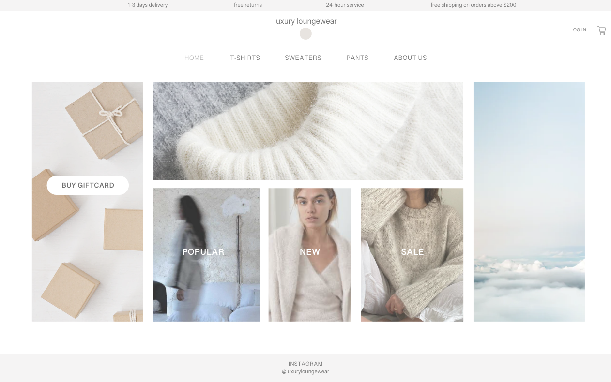
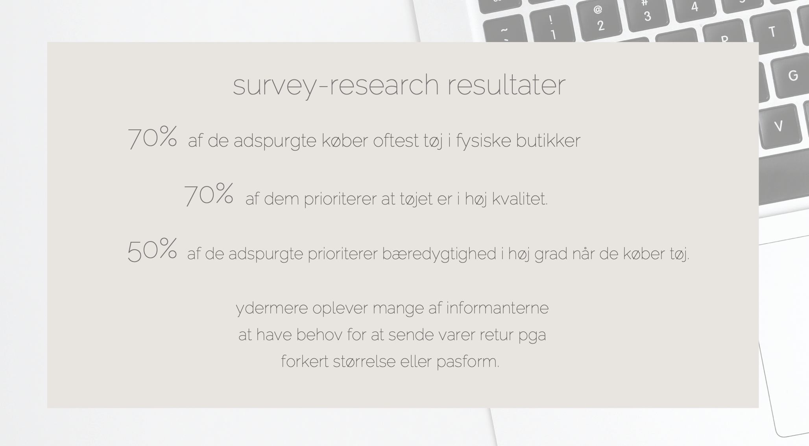

TEMA 3: UX
VIDEN
Eksempler på viden fra tema 3:
Copywriting - microcopy - pitch
FÆRDIGHEDER
Jeg anvendte bl.a. copywriting tricks til at overtale kunderne til at købe noget. F.eks. med teksten "1-3 days delivery" og "free returns" oppe i toppen
Jeg benyttede også microcopy som er de ord eller sætningen i brugergrænsefladen som bliver brugt til at guide brugere og hjælpe dem med at interagere med produktet/hjemmesiden. F.eks. "Buy a giftcard"
Jeg har produceret en pitch på baggrund af bl.a. desk-research, surveys, tænke-høj tests
KOMPETENCER
Bl.a. i gruppeprojektet om redesign i tema 5 anvendte vi microcopy på vores website

